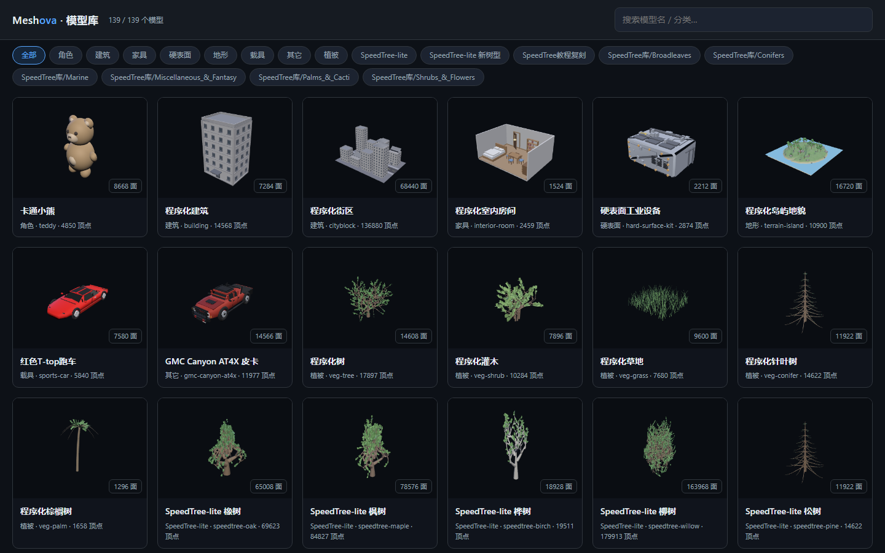
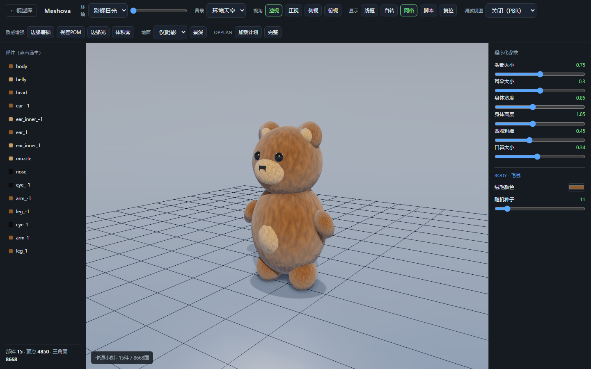
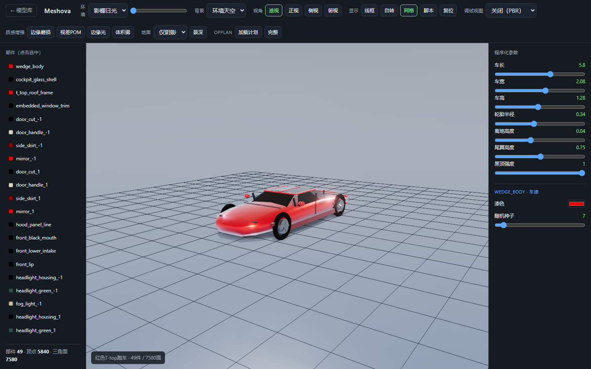
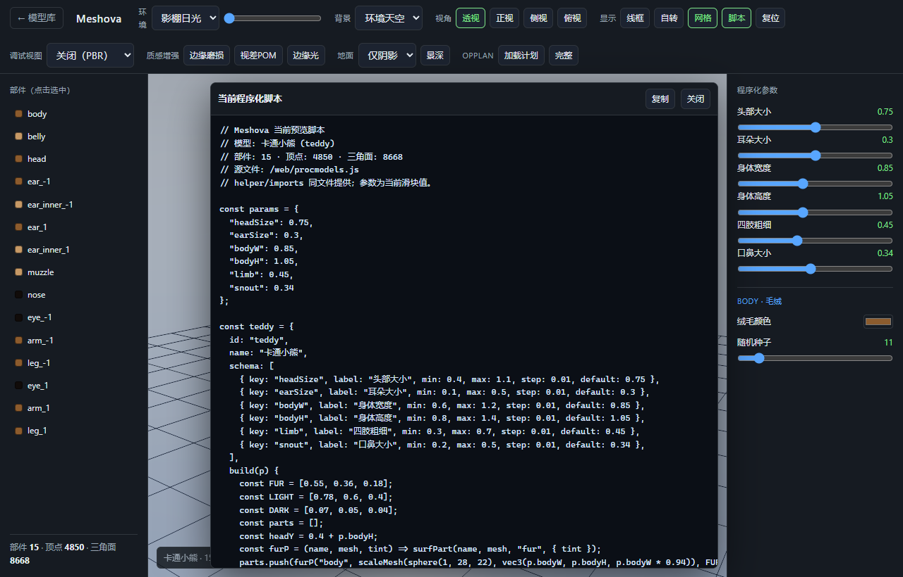
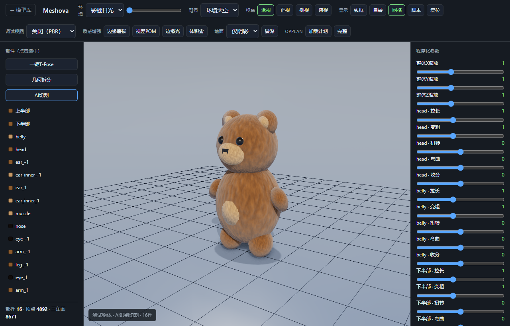

开源项目介绍 / 程序化建模 / AI 资产生成
Meshova：让 AI 写程序化建模脚本，而不是直接吐出黑箱网格
Meshova 是一个用 TypeScript 写的 Web 程序化建模与程序化 PBR 材质库。它的核心目标不是做另一个“输入一句话，生成一个死模型”的 text-to-3D 工具，而是给 AI 一套可执行、可复现、可调参、可迭代的建模内核。

为什么要做这个项目？
现在的 AI 3D 资产生成，常见路线是黑箱直出网格：你给一句提示词，它给一个模型。 这种方式看起来很快，但对游戏开发、技术美术、工具链集成并不友好。
问题很直接：生成结果很难稳定复现，很难局部修改，很难保证拓扑、材质、命名、LOD、 部件语义、批量变体都可控。对生产环境来说，“看起来像”不够，资产还要能改、能组合、 能调参数、能进入流水线。
Meshova 选择另一条路：让 AI 不直接吐模型，而是写程序化脚本。脚本调用 Meshova 的几何、材质、随机、视觉评估接口生成模型。这样产物仍然是代码，能被版本管理、能复现、 能审查，也能继续被人或 AI 修改。
核心思路：脚本优先，而不是节点优先
传统 DCC 里，节点图对人很友好，因为人需要可视化地组织逻辑。但对 AI 来说，代码才是天然表达方式。 AI 写 TypeScript 函数，比模拟鼠标连节点更直接，也更容易测试、回滚、裁剪、重用。
Meshova 因此把核心能力做成 TypeScript 库：几何体、曲线、布尔、散布、细分、形变、场函数、 程序化纹理、PBR 材质、图片评分、沙箱执行，都能被脚本调用。
const rng = makeRng(seed);
const body = scaleMesh(sphere(1, 28, 22), vec3(width, height, width));
const fur = materialFromFields({
baseColor: fbmColor(noise, furRamp),
roughness: constantField(0.85),
metalness: constantField(0)
});代码只是入口。更重要的是，Meshova 要保证同一个 seed、同一段脚本、同一套参数能得到同一个结果。 这让截图回归、AI 自迭代和资产变体都变得可控。
工作流：AI 写脚本，浏览器渲染，截图反向修正
这个闭环是项目最重要的部分。AI 写脚本后，浏览器查看器或 headless 截图脚本渲染模型； 视觉模块再计算轮廓、视角、材质类别等评分；评分差，就把问题反馈给 AI，让它改脚本。
这种方式比一次性生成网格慢一些，但优势是可解释。哪里不像，可以改哪里；哪个部件不对， 可以定位到部件；材质类别错了，可以切 preset；参数变化，也能批量生成变体。
现在已经能做什么？
| 模块 | 当前能力 | 意义 |
|---|---|---|
math / random |
向量、矩阵、标量工具、seed RNG、Perlin noise、FBM | 同 seed 同结果，程序化资产可复现 |
geometry |
基础体、变换、曲线、扫描、散布、布尔、细分、形变、语义部件 | 从简单模型到可组合资产，不依赖手工建模 |
texture |
程序化 PBR 通道、noise pattern、tiling、PNG 导出、材质 preset | 材质由代码生成，不把参考图烘成死贴图 |
viewer |
浏览器模型库、实时参数面板、PBR/法线/深度/matcap 查看 | 人和 AI 都能检查模型质量 |
vision / pipeline |
轮廓、视角、材质分类、图片到程序化模型的闭环接口 | 支持“看图改脚本”，形状优先，材质类别兜底 |


为什么坚持“程序化”，不直接做图片复刻？
Meshova 的图片输入目标不是复刻像素，也不是做 3D 扫描替代品。它优先追求造型一致性： 多视角轮廓、比例、主要部件、语义结构尽量像参考物。材质只做类别正确：金属像金属， 布料像布料，皮革像皮革。不确定时宁可退回中性材质，也不强猜。
原因很实际：游戏和实时应用需要可编辑资产。一个从图片直接烘出来的死网格，短期看好看， 长期很难维护。程序化模型虽然初始效果更克制，但后续能改比例、换材质、批量出变体、 接入工具链，还能被 AI 继续迭代。

语义部件：让参数面板对人有意义
程序化建模很容易掉进另一个坑：参数很多，但名字像 root.0、component_1，
人看不懂，AI 也不容易稳定引用。Meshova 把语义部件作为一等概念处理，尽量把部件标成
head、belly、wheel、door 这类可读名字。
这样参数调节才像资产编辑，而不是调一堆匿名网格。对未来的图片输入也重要：AI 或 VLM 可以先拆出“上半部、下半部、头部、腹部”等语义区域，再把区域绑定到可编辑参数上。

这和 Blender / Houdini / Substance Designer 是什么关系？
Meshova 会学习这些工具的思想，但不是要复制它们。Houdini 证明了程序化建模的价值； Substance Designer 证明了程序化材质的价值；Blender 证明了开源 DCC 的生态价值。
Meshova 的切入点更窄：Web、TypeScript、AI 脚本、headless 截图闭环。它更像一个可以嵌入 AI 工作流的程序化资产内核，而不是完整 DCC。项目采用 MIT 许可，算法会参考公开知识自行重写， 不复制 GPL 源码。
| 工具/路线 | 主要交互对象 | Meshova 的取舍 |
|---|---|---|
| 传统 DCC | 人操作 UI | Meshova 优先让 AI 写脚本，人再审查和调参 |
| 节点式程序化工具 | 节点图 | Meshova 优先代码 DSL，方便测试、版本管理、自动生成 |
| 黑箱 text-to-3D | 提示词和生成结果 | Meshova 保留生成过程，强调可复现和可编辑 |
适合什么场景？
- 独立游戏或原型项目，需要大量风格统一、可调参数的资产。
- 技术美术工具链，需要程序化生成、批量变体、自动截图回归。
- AI 资产流水线，需要让模型生成过程可审查，而不是只拿最终网格。
- Web 工具或在线编辑器，需要在浏览器里生成、预览、导出模型和材质。
它暂时不适合追求单张图极致复刻，也不适合替代成熟 DCC 的手工雕刻、复杂绑定、影视级资产制作。 当前重点是把“可控程序化资产生成”这件事做扎实。
下一步
Meshova 后续会继续加强三件事。第一，几何表达能力：更多曲面、拓扑编辑、局部布尔、角色和硬表面模板。 第二，视觉闭环：多视角评分、VLM 语义拆解、黑盒参数优化，让“看图改脚本”更稳定。第三，Web 性能：把更重的几何和材质计算逐步推向 WebGPU，让浏览器端也能承担更多实时生成任务。
我希望它最后能变成一个开源、非黑箱、面向 AI 的程序化资产底座：人定义审美和约束， AI 写脚本和迭代，Meshova 负责可复现的几何、材质、渲染、评分。